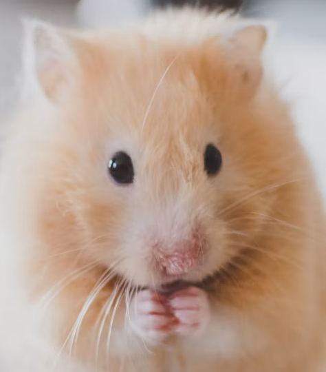

Introduce
의학적 질문을 데이터로 바꾸고, 데이터를 연구와 AI 모델로 연결하는 연구원이 되겠습니다.
Skills
Language
English
Russian
Rodentese
Programming Language
Python
SQL
Database
PostgreSQL
Redis
Infra
AWS
Docker
Terraform
GitHub Actions
Experience
해씨 코딩 스쿨
2026.8 - 현재
200g 급 팀원
미니 프로젝트
2026. 9. - 2026. 11.
- 햄스케어 데이터 기반의 쳇바퀴 RPM 분석 및 시각화 미니 프로젝트
- 햄스케어 데이터 기반의 씨앗 은닉처 예측 모델 만들기 미니 프로젝트
- 반려햄 디지털 약 서랍 비즈니스 시나리오 미니 프로젝트
Education
| 2009 - 2018 | Rodent Medical Institute (설치류 의학 전공) |
|---|---|
| 2021 - 2023 | Hamster Graduate school (햄스케어 공학 전공) |
Awards
| 2014. 1. | 올해의 우수 햄스터 (햄스터 씨앗 기동대) |
|---|---|
| 2023. 2. | 교내 우수 논문 햄스터 (Hamster Graduate school) |
Certifications
| 2018. 6. | 설치류 의사 면허 (Rodent Medical Institute) |
|---|---|
| 2023. 4 | Seed Gourmet Certificate (International Seed Gourmet Association) |